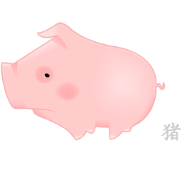

<ion-header>
  <ion-navbar color="primary">
    <ion-title text-center>NATICONFI
      <ion-icon name="md-aperture"></ion-icon>
    </ion-title>
  </ion-navbar>
</ion-header>

<ion-content padding text-center>

  <div>
    
  </div>

  <ion-list>

    <ion-item>
      <ion-label floating>Usuario</ion-label>
      <ion-input type="text"></ion-input>
    </ion-item>

    <ion-item>
      <ion-label floating>Contraseña</ion-label>
      <ion-input type="password"></ion-input>
    </ion-item>

  </ion-list>

  <div padding>
    <button ion-button round block>
      Ingresar
    </button>
  </div>
</ion-content>

<ion-footer>

  <ion-toolbar>
    <button style="FONT-SIZE: 11pt; 
    BACKGROUND-COLOR: #ffffff00; color: #488aff" (click)="RdNuevo()">
      ¿Eres nuevo?
    </button>

    <ion-buttons end>

      <button icon-right style="FONT-SIZE: 11pt; 
      BACKGROUND-COLOR: #ffffff00; color: #488aff" (click)="RdContra()">
        ¿olvidaste <br/> tu contraseña?
      </button>
      <!-- -->
    </ion-buttons>

  </ion-toolbar>

</ion-footer>